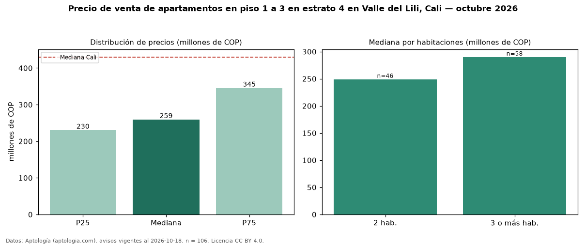

Precio de venta de apartamentos en piso 1 a 3 en estrato 4 en Valle del Lili, Cali — octubre 2026
En Valle del Lili, Cali, la mediana de precio de venta de apartamentos en piso 1 a 3 en estrato 4 es COP 259 millones, según 106 avisos vigentes. Prácticamente coincide con la mediana de los apartamentos en estrato 4 en venta de Valle del Lili (COP 266 millones, n = 394); este segmento reúne el 27 % de esos avisos. Por metro cuadrado, la mediana es COP 4,31 millones/m² (n = 103), 0 % por debajo de los apartamentos en estrato 4 en venta de Valle del Lili (COP 4,31 millones/m²). El área mediana anunciada es 63 m². El segmento con más oferta es el de 3 o más habitaciones (58 avisos, mediana COP 290 millones); pasar de 2 habitaciones a 3 o más habitaciones cambia la mediana +16 %. La administración mediana declarada es COP 300.000 al mes (n = 87). La mediana de todos los apartamentos en venta de Cali es COP 430 millones (−40 % de diferencia). 90 % de los avisos con el dato declara parqueadero. Datos: Aptología (aptologia.com), CC BY 4.0 — https://www.aptologia.com/venta/cali/valle-del-lili. Archivos: PDF, CSV con las cifras y gráfica PNG.

| Avisos únicos | 106 |
|---|---|
| Percentil 25 | COP 230.000.000 |
| Mediana | COP 259.000.000 |
| Percentil 75 | COP 345.000.000 |
| Mediana por m² | COP 4.307.692 |
Fuente: avisos vigentes de portales inmobiliarios recopilados por Aptología, deduplicados (mínimo 30 avisos únicos por celda). Precios pedidos, no cerrados. Fecha: 2026-10-18.